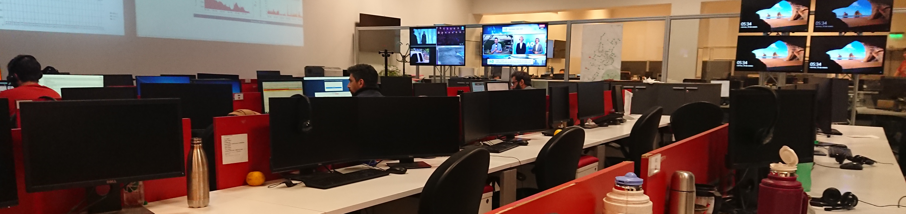

En esta WEB encontrarás información útil para el día a día, capacitarte y para facilitar reclamos a proveedores y terceros.
Herramientas Operativas
Afectación Celdas IPRAN
Consulta Anillos IPRAN
Grafana de Potencias IPRAN NOKIA
Grafana Alcatel 1830
Grafana AGG y Uplinks
Grafana Packet Core
Grafana GPON
Grafana Salidas Internacionales
Grafana de Potencias IPRAN
Grafana de IPRAN CISCO
Tablero IPRAN
ALU
Sayri
Degradaciones
Sayri
OTDR
Whatsdown
Reporte de BOX FO
GiraWEB
Documentación
Ingenierías de
TX
Ingenierías
IP
Ingenierías de
Celdas
LEDZITE
Ingenierías
Internacionales
Ingenierías IPRAN
Cisco
Ingenierías Red de
Acceso
Fija
Usuarios ID
NOC DB
Teléfonos Útiles
TELEFONOS PROVEEDORES
Guardias
Visual Nodos
PROCEDIMIENTOS